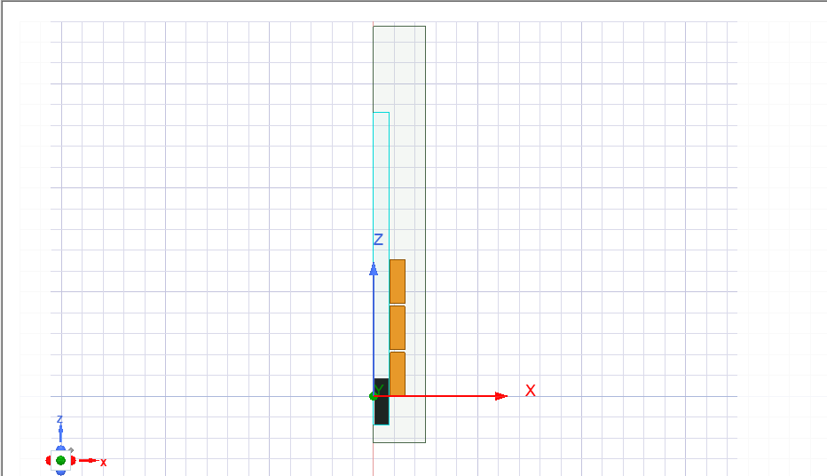
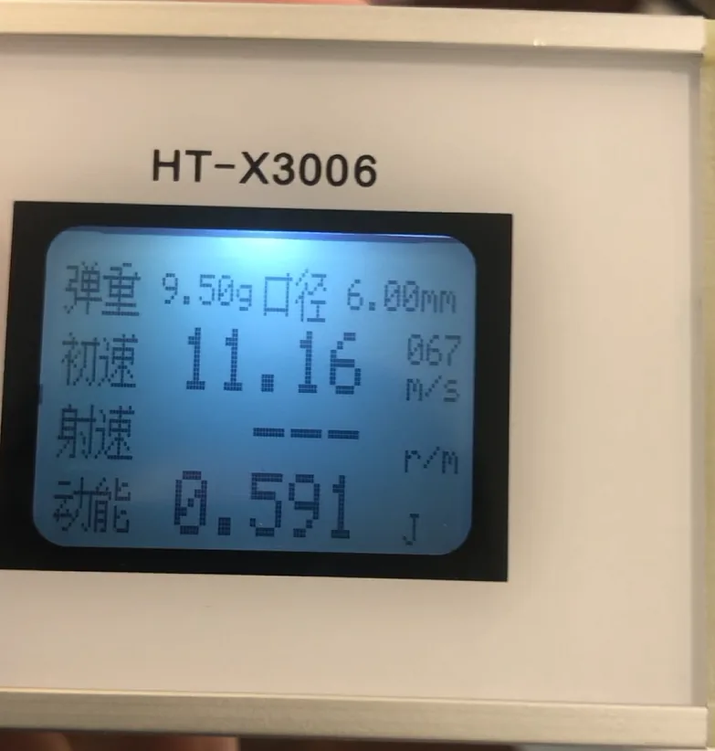
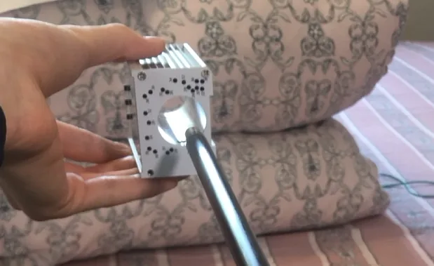

Independent R&D · Project 01
Electromagnetic Accelerator
A long-running engineering build that evolved through three physical versions—from a high-voltage test setup to a functional two-stage system informed by electromagnetic simulation, mechanical CAD, embedded timing, and measured results.

Three versions, one expanding test loop.
The project began as an experiment in electromagnetic acceleration and grew into a system-level build connecting circuit behavior, coil geometry, timing logic, mechanical repeatability, and measured physical performance.
Control the sequence, not just the circuit.
A multi-stage accelerator only works when each coil energizes at the useful part of the projectile’s motion. The central challenge was coordinating sequential electromagnetic stages while turning a loose experimental setup into a mechanically repeatable system.
- Model the magnetic system and evaluate coil-timing behavior.
- Create stage-control logic that could translate simulated timing into physical activation.
- Design supports and launcher geometry that kept the two-stage assembly aligned.
- Measure the result and preserve failed tests as engineering evidence.
Simulation, CAD, firmware, then the bench.
Electromagnetic simulation
I used ANSYS Maxwell 2D to study the electromagnetic field and support coil-timing optimization. The simulation became a design input for the embedded sequence rather than a standalone visualization.
Mechanical design and fabrication
I modeled support components in Fusion 360 and fabricated parts through 3D printing, improving the physical alignment and repeatability of the launcher.
Embedded control
Arduino stage-control logic coordinated sequential coil activation. The final documented build used four 400 V, 330 μF capacitors and a two-stage arrangement.
Three versions, four years.
Versions 1 and 2 were physical prototyping and experimental iteration. Version 3 is where CAD, electromagnetic simulation, and precise embedded timing entered the build. The failed tests stay in the record — they are where most of the learning actually happened.
Early prototype
The first question was the simplest one: does the loop work at all? Charge a bank, fire a single coil, and measure whatever comes out the other end.


Two-stage preparation
V2 existed to prepare the system architecture for a second stage — and to find out how to sense the projectile well enough to time it. The photoelectric sensing approach was tested here and later abandoned, which is what pushed the timing problem toward simulation in V3.


Functional two-stage design
The working build. Two stages sit close together and fire in sequence under Arduino control, with the timing derived from ANSYS Maxwell rather than from a sensor. Fusion 360 supports and 3D printing gave the assembly enough mechanical repeatability to test the same thing twice.


Videos play on this page. Full channel: @SomeHeresyGaming ↗
A working system—and a better engineering method.
The documented build reached approximately 16 m/s with a 54.63 g projectile. More importantly, the project taught me to connect simulation assumptions to embedded timing, physical fabrication, repeatable testing, and failure analysis instead of treating those disciplines as separate tasks.